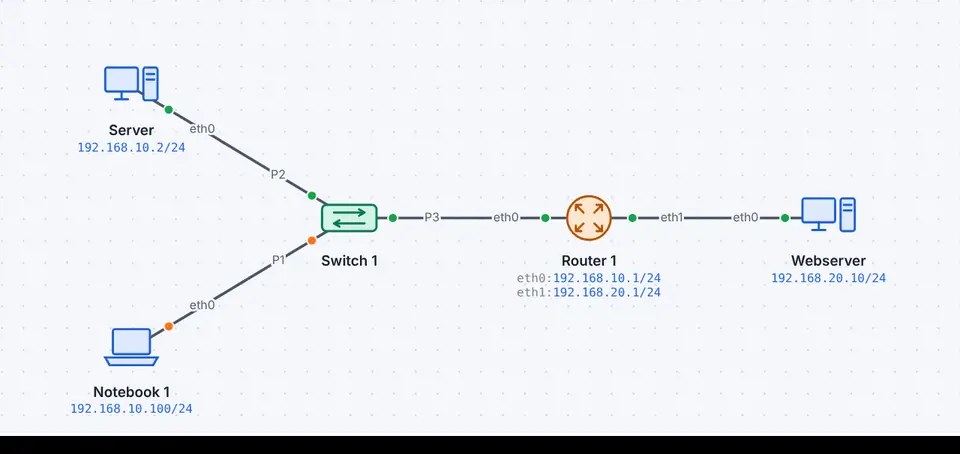
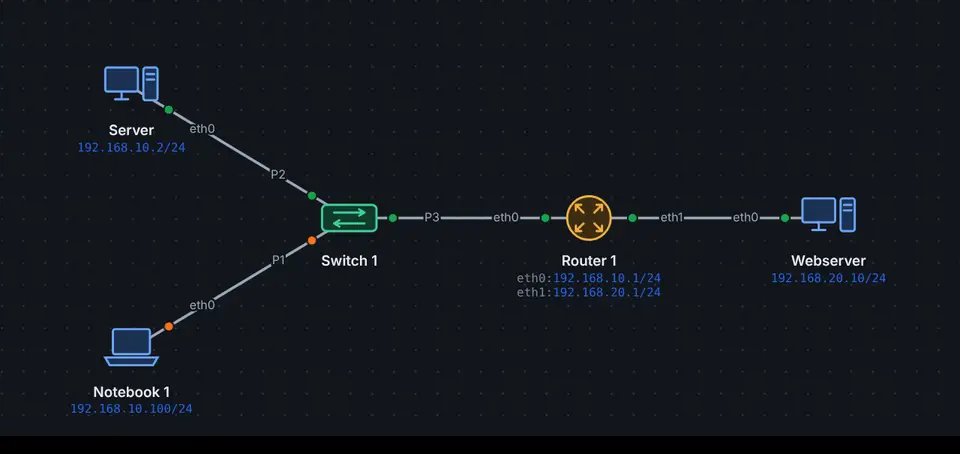

How Ethernet frames, IPv4 and IPv6 packets, TCP segments and UDP datagrams nest inside each other, field by field according to the standards, with real bytes from leyoNET.
Every layer wraps the data of the layer above: it puts its header in front and treats everything else as payload. Only Ethernet also appends something at the end: the checksum FCS. On the wire, preamble and SFD come before it and a short gap after it. That is layer 1, no capture shows it.
1bits
Preamble + SFD8 bytes
Frame · 158 bytes
Gap (IFG)12 bytes
2Frame
Ethernet II14 bytes
Payload: IPv4 · 140 bytes
FCS4 bytes
3Packet
IPv420 bytes
Payload: TCP · 120 bytes
4Segment
TCP20 bytes
Payload: HTTP · 100 bytes
7data
Data · 100 bytes
Real frame from the demo “DNS, TCP and HTTP” (no. 36, 158 bytes), exactly as the packet list in leyoNET shows it.
With “Wrap the next layer” the frame is built step by step, just as in the sender: at the top the HTTP request, at the bottom the bits on the cable. The receiver unpacks in reverse order. A switch only opens the layer 2 envelope, a router also the layer 3 envelope (see OSI model and encapsulation).
Layer
Data unit
Header contains
Example
7 Application
data
depends on the service
HTTP request, DNS query
4 Transport
segment (TCP), datagram (UDP)
ports
TCP 20 bytes, UDP 8 bytes
3 Network
packet
IP addresses, TTL
IPv4 20 bytes, IPv6 40 bytes
2 Data link
frame
MAC addresses, type; FCS at the end
Ethernet 14 + 4 bytes
1 Physical
bits
preamble, SFD
8 bytes before every frame
A frame as leyoNET shows it
This frame comes from the simulation. The packet list shows every frame exactly like this: the application at the top, the physical layer at the bottom, every layer in its colour. Below are the bytes as they are on the wire.
7Application
HTTP · 100 B
GET /stundenplan.html HTTP/1.1
GET /stundenplan.html HTTP/1.1↵
Host: www.schule.example↵
User-Agent: leyoNET↵
Connection: close↵
↵
6Presentation
part of the application in TCP/IP
5Session
part of the application in TCP/IP
4Transport
TCP · 120 B
49152
80 (HTTP)
11001
51001
20 Bytes, [PSH, ACK]
64240
0xeed9
0
Sequence and acknowledgement numbers count bytes. Fixed window, no congestion control.
3Network
IPv4 · 140 B
4, 20 Bytes
0x00 (Best Effort)
140
0x0006
0x4000 (Don't Fragment)
64
6 (TCP)
0x9aa7
192.168.10.100
192.168.20.10
2Data link
Ethernet II · 158 B
02:00:00:00:04:00
02:00:00:00:01:00
0x0800 (IPv4)
0x9facebdb (CRC-32)
Ethernet frame per IEEE 802.3: header (14 bytes, 18 with an 802.1Q tag), payload (at least 46 bytes, padded otherwise) and at the end the frame check sequence FCS (CRC-32, 4 bytes). Preamble and SFD belong to layer 1. Many captures omit the FCS because the network card strips it first.
1Physical
1000BASE-T (IEEE 802.3ab)
1000BASE-T (IEEE 802.3ab)
1 Gbit/s
PAM-5, 4 pairs, RJ45
158
178 (+ preamble, SFD, IFG)
On the wire: preamble (7 bytes) and SFD (1 byte), then the frame including FCS, followed by a 12-byte interframe gap.
Point at a field: its bytes light up in the hex view below.
Real frame from the demo “DNS, TCP and HTTP” (no. 36, 158 bytes), exactly as the packet list in leyoNET shows it.
The Ethernet frame
Ethernet frames according to IEEE 802.3 are at least 64 bytes and at most 1518 bytes long (1522 with a VLAN tag), counted from the destination MAC up to and including the FCS. If the packet is shorter than 46 bytes, the sender pads it with zeros, as with every ARP request. The FCS (frame check sequence) is a CRC-32 over the whole frame. The receiver recomputes it; if it does not match, it drops the frame silently. Ethernet leaves error handling to the upper layers.
Ethernet IIFrame · IEEE 802.3
Preamble7 bytes
SFD1 bytes
Destination MAC6 bytes02:00:00:00:04:00
Source MAC6 bytes02:00:00:00:01:00
EtherType2 bytes0x0800
Payload46–1500 bytes140 Byte
FCS4 bytes0x9facebdb
Gap (IFG)12 bytes
Left to right, in the order the bytes are sent. Grey dashed: never part of a capture (layer 1 or line framing). Point at a field for an explanation.
Field
Length
Example value
Meaning
Preamble (layer 1)
7 bytes
10101010 × 7
Seven bytes 10101010: the receiver synchronises its clock. Part of the physical layer.
SFD (layer 1)
1 bytes
10101011
Start frame delimiter 10101011: the frame starts now.
Destination MAC
6 bytes
02:00:00:00:04:00
To whom? FF:FF:FF:FF:FF:FF is broadcast, a first byte with the lowest bit set is multicast.
Source MAC
6 bytes
02:00:00:00:01:00
From whom? The MAC address of the sending interface; the switch learns it.
EtherType
2 bytes
0x0800
What is inside: 0x0800 IPv4, 0x86DD IPv6, 0x0806 ARP, 0x8100 VLAN tag, 0x8864 PPPoE. Values from 0x0600 are types, smaller ones a length (IEEE 802.3).
Payload
46–1500 bytes
140 Byte
The layer-3 packet, 46 to 1500 bytes (MTU). If it is shorter, the sender pads with zeros so the frame including FCS is 64 bytes long.
FCS
4 bytes
0x9facebdb
Frame check sequence: CRC-32 over the whole frame from the destination MAC. If it does not match, the receiver drops the frame.
Gap (IFG) (layer 1)
12 bytes
At least 12 bytes of silence before the next frame (interframe gap). Part of the physical layer.
Values: Real frame from the demo “DNS, TCP and HTTP” (no. 36, 158 bytes), exactly as the packet list in leyoNET shows it.
Many captures do not show the FCS because the network card checks and strips it first. leyoNET shows it and also writes it into the pcapng file (with the note “4 bytes FCS” for Wireshark).
With a VLAN tag
On a trunk a 4-byte tag according to IEEE 802.1Q sits between source MAC and EtherType. It starts with 0x8100, followed by priority and VLAN number (see VLANs and trunks).
802.1QTag in the frame · IEEE 802.1Q
0481216202428
TPID16 bits0x8100
PCP3 bits0
DEI1 bit0
VLAN ID12 bits10
Each row has 32 bits (4 bytes), bit 0 on the left, as the RFCs draw their headers. Dashed: variable or optional. Point at a field for an explanation.
Field
Length
Example value
Meaning
TPID
16 bits (2 bytes)
0x8100
Tag protocol identifier 0x8100: a VLAN tag follows instead of the EtherType.
PCP
3 bits
0
Priority code point: priority 0 to 7 for quality of service (e.g. voice higher).
DEI
1 bit
0
Drop eligible indicator: this frame may be dropped first when congested.
VLAN ID
12 bits
10
VLAN number 1 to 4094 (0 and 4095 are reserved).
Values: Real frame from the demo “Router on a stick” (no. 7, 82 bytes), exactly as the packet list in leyoNET shows it.
Ethernet II + 802.1QFrame · IEEE 802.3, IEEE 802.1Q
Preamble7 bytes
SFD1 bytes
Destination MAC6 bytes02:00:00:00:01:00
Source MAC6 bytes02:00:00:00:03:00
TPID2 bytes0x8100
TCI2 bytes0x000a
EtherType2 bytes0x0800
Payload42–1500 bytes60 Byte
FCS4 bytes0xc04af1d0
Gap (IFG)12 bytes
Left to right, in the order the bytes are sent. Grey dashed: never part of a capture (layer 1 or line framing). Point at a field for an explanation.
Field
Length
Example value
Meaning
Preamble (layer 1)
7 bytes
10101010 × 7
Seven bytes 10101010: the receiver synchronises its clock. Part of the physical layer.
SFD (layer 1)
1 bytes
10101011
Start frame delimiter 10101011: the frame starts now.
Destination MAC
6 bytes
02:00:00:00:01:00
To whom? FF:FF:FF:FF:FF:FF is broadcast, a first byte with the lowest bit set is multicast.
Source MAC
6 bytes
02:00:00:00:03:00
From whom? The MAC address of the sending interface; the switch learns it.
TPID
2 bytes
0x8100
Tag protocol identifier 0x8100: a VLAN tag follows instead of the EtherType.
TCI
2 bytes
0x000a
Tag control information: priority (PCP), DEI and VLAN ID, 16 bits together.
EtherType
2 bytes
0x0800
What is inside: 0x0800 IPv4, 0x86DD IPv6, 0x0806 ARP, 0x8100 VLAN tag, 0x8864 PPPoE. Values from 0x0600 are types, smaller ones a length (IEEE 802.3).
Payload
42–1500 bytes
60 Byte
The layer-3 packet. Because of the 4-byte tag, 42 bytes are enough for the minimum length of 64 bytes.
FCS
4 bytes
0xc04af1d0
Frame check sequence: CRC-32 over the whole frame from the destination MAC. If it does not match, the receiver drops the frame.
Gap (IFG) (layer 1)
12 bytes
At least 12 bytes of silence before the next frame (interframe gap). Part of the physical layer.
Values: Real frame from the demo “Router on a stick” (no. 7, 82 bytes), exactly as the packet list in leyoNET shows it.
IEEE 802.3 with LLC and SNAP
If the position of the EtherType holds a number up to 1500, it is a length. Then an LLC header according to IEEE 802.2 follows, which says which service the data is for. Spanning tree (STP) uses this form with DSAP and SSAP 0x42. With DSAP 0xAA a SNAP header with the EtherType follows (RFC 1042); this is how Wi-Fi and other IEEE 802 networks carry IP packets.
Left to right, in the order the bytes are sent. Grey dashed: never part of a capture (layer 1 or line framing). Point at a field for an explanation.
Field
Length
Example value
Meaning
Preamble (layer 1)
7 bytes
10101010 × 7
Seven bytes 10101010: the receiver synchronises its clock. Part of the physical layer.
SFD (layer 1)
1 bytes
10101011
Start frame delimiter 10101011: the frame starts now.
Destination MAC
6 bytes
01:80:c2:00:00:00
To whom? FF:FF:FF:FF:FF:FF is broadcast, a first byte with the lowest bit set is multicast.
Source MAC
6 bytes
02:00:00:00:01:06
From whom? The MAC address of the sending interface; the switch learns it.
Length
2 bytes
38
Length of the payload in bytes (at most 1500). This tells the receiver it is an IEEE 802.3 frame with LLC instead of Ethernet II.
DSAP
1 bytes
0x42
Destination service access point (IEEE 802.2 LLC): for whom at the other end. 0x42 = spanning tree, 0xAA = SNAP follows.
SSAP
1 bytes
0x42
Source service access point: from which service, usually the same as DSAP.
Control
1 bytes
0x03
LLC control, 0x03 = unnumbered information (without acknowledgement).
OUI (optional)
3 bytes
Only with SNAP (DSAP 0xAA): organisation identifier, 00-00-00 for EtherType values (RFC 1042).
Type (SNAP) (optional)
2 bytes
Only with SNAP: the EtherType of the payload, e.g. 0x0800 for IPv4. This is how Wi-Fi and other LLC networks carry IP.
Payload
38–1497 bytes
43 Byte
The payload, e.g. a spanning tree BPDU. Shorter frames are padded to 64 bytes.
FCS
4 bytes
0x182ad55e
Frame check sequence: CRC-32 over the whole frame from the destination MAC. If it does not match, the receiver drops the frame.
Gap (IFG) (layer 1)
12 bytes
At least 12 bytes of silence before the next frame (interframe gap). Part of the physical layer.
Values: Real frame from the demo “VLAN and spanning tree” (no. 1, 64 bytes), exactly as the packet list in leyoNET shows it.
Wi-Fi frames
A Wi-Fi frame according to IEEE 802.11 has up to four addresses, because sender and receiver on the radio link are not always source and destination (the access point is in between). It also ends with a CRC-32 FCS. Data travels with LLC/SNAP and encrypted with WPA2.
IEEE 802.11Frame · IEEE 802.11
Frame Control2 bytes0x4000
Duration/ID2 bytes314
Address 16 bytes02:00:00:00:03:02
Address 26 bytes02:00:00:00:05:00
Address 36 bytes02:00:00:00:03:02
Sequence Control2 bytes0x0010
Address 46 bytes
QoS Control2 bytes
Frame Body0–2304 bytes21 Byte
FCS4 bytes0x2b56a31f
Left to right, in the order the bytes are sent. Grey dashed: never part of a capture (layer 1 or line framing). Point at a field for an explanation.
Field
Length
Example value
Meaning
Frame Control
2 bytes
0x4000
Frame type (management, control, data), subtype and bits such as To DS/From DS, retry and protected (encrypted).
Duration/ID
2 bytes
314
How long the medium remains busy (in microseconds); other stations wait that long.
Address 1
6 bytes
02:00:00:00:03:02
Receiver on the radio link (receiver address).
Address 2
6 bytes
02:00:00:00:05:00
Transmitter on the radio link (transmitter address).
Address 3
6 bytes
02:00:00:00:03:02
Depending on To DS/From DS the BSSID of the access point or the actual source or destination in the LAN.
Sequence Control
2 bytes
0x0010
Fragment and sequence number: detects duplicates after a retransmission.
Address 4 (optional)
6 bytes
Only between two access points (To DS and From DS set, e.g. wireless bridge or mesh).
QoS Control (optional)
2 bytes
Only for QoS data: priority (traffic class) of the frame, basis of WMM.
Frame Body
0–2304 bytes
21 Byte
Management data (SSID, rates, security) or, for data, LLC/SNAP and the packet; encrypted with WPA2.
FCS
4 bytes
0x2b56a31f
CRC-32 over header and body, as with Ethernet. Radio is error-prone: faulty frames are retransmitted.
Values: Real frame from the demo “Wi-Fi with mesh” (no. 1, 49 bytes), exactly as the packet list in leyoNET shows it.
PPP on serial lines
A point-to-point line needs no MAC addresses. PPP in HDLC-like framing (RFC 1662) puts flags 0x7E at the start and end, a fixed address and control field, the protocol and at the end a 16-bit FCS (see Serial lines: HDLC, PPP and PPPoE).
PPP (RFC 1662)Frame · RFC 1662, RFC 1661
Flag1 bytes0x7E
Address1 bytes0xff
Control1 bytes0x03
Protocol2 bytes0x0021
Information≤ 1500 bytes60 Byte
FCS2 bytes0xef53
Flag1 bytes0x7E
Left to right, in the order the bytes are sent. Grey dashed: never part of a capture (layer 1 or line framing). Point at a field for an explanation.
Field
Length
Example value
Meaning
Flag (framing, not in captures)
1 bytes
0x7E
0x7E marks the start and end of every frame on the line.
Address
1 bytes
0xff
Always 0xFF (all stations): a point-to-point line has only one other end.
Control
1 bytes
0x03
Always 0x03 (unnumbered information).
Protocol
2 bytes
0x0021
What is inside: 0x0021 IPv4, 0x0057 IPv6, 0xC021 LCP, 0x8021 IPCP (RFC 1661).
Information
≤ 1500 bytes
60 Byte
The packet or control message, at most 1500 bytes without negotiation (MRU).
FCS
2 bytes
0xef53
Checksum FCS-16 over address to information (FCS-32 on request).
Flag (framing, not in captures)
1 bytes
0x7E
Closing flag 0x7E (can also open the next frame).
Values: Real frame from the demo “Serial WAN link with PPP” (no. 12, 66 bytes), exactly as the packet list in leyoNET shows it.
The IPv4 packet
Without options the IPv4 header according to RFC 791 is 20 bytes long. Routers mainly read the destination IP (for the path) and the TTL (against loops). The checksum only covers the header; because every router lowers the TTL, it recomputes it. DSCP and ECN (formerly “type of service”) are defined in RFC 2474 and RFC 3168.
IPv4Packet · RFC 791, RFC 2474, RFC 3168
0481216202428
Version4 bits4
IHL4 bits5
DSCP6 bits0
ECN2 bits0
Total length16 bits140
Identification16 bits0x0006
Flags3 bitsDF
Fragment offset13 bits0
TTL8 bits64
Protocol8 bits6
Header checksum16 bits0x9aa7
Source IP32 bits192.168.10.100
Destination IP32 bits192.168.20.10
Options0–40 bytes
Payload≤ 65515 bytes120 Byte
Each row has 32 bits (4 bytes), bit 0 on the left, as the RFCs draw their headers. Dashed: variable or optional. Point at a field for an explanation.
Field
Length
Example value
Meaning
Version
4 bits
4
4 for IPv4.
IHL
4 bits
5
Internet header length in 32-bit words: 5 = 20 bytes without options.
DSCP
6 bits
0
Differentiated services: traffic class for quality of service (RFC 2474), 0 = best effort.
ECN
2 bits
0
Explicit congestion notification: routers signal congestion without dropping packets (RFC 3168).
Total length
16 bits (2 bytes)
140
Length of header and payload in bytes, at most 65,535.
Identification
16 bits (2 bytes)
0x0006
Packet number; all fragments of a packet carry the same one.
Flags
3 bits
DF
Bit 0 reserved, DF = don't fragment, MF = more fragments follow.
Fragment offset
13 bits
0
Position of the fragment in the original packet, in steps of 8 bytes.
TTL
8 bits
64
Time to live: each router subtracts 1; at 0 the packet is dropped (ICMP time exceeded).
Protocol
8 bits
6
What is inside: 1 ICMP, 6 TCP, 17 UDP, 50 ESP, 89 OSPF.
Header checksum
16 bits (2 bytes)
0x9aa7
Checksum over the header only (RFC 1071); each router recalculates it because of the TTL.
Source IP
32 bits (4 bytes)
192.168.10.100
Sender, unchanged along the whole path (except with NAT).
Destination IP
32 bits (4 bytes)
192.168.20.10
Destination, routers decide the path by it.
Options (optional)
0–40 bytes
Rarely used (e.g. record route); IHL is then greater than 5.
Payload
≤ 65515 bytes
120 Byte
The segment or message of the next layer (TCP, UDP, ICMP …).
Values: Real frame from the demo “DNS, TCP and HTTP” (no. 36, 158 bytes), exactly as the packet list in leyoNET shows it.
The IPv6 packet
The IPv6 header according to RFC 8200 is always 40 bytes long; the addresses alone take 32 of them. It is simpler than IPv4: no checksum (Ethernet and TCP/UDP take care of that), no fragmentation by routers, options only as extension headers behind the header (next header).
IPv6Packet · RFC 8200, RFC 2474, RFC 3168
0481216202428
Version4 bits6
Traffic class8 bits0x00
Flow label20 bits0x00000
Payload length16 bits32
Next header8 bits17
Hop limit8 bits255
Source IPv6128 bitsfe80::ff:fe00:301
Destination IPv6128 bitsff02::9
Payload≤ 65535 bytes32 Byte
Each row has 32 bits (4 bytes), bit 0 on the left, as the RFCs draw their headers. Dashed: variable or optional. Point at a field for an explanation.
Field
Length
Example value
Meaning
Version
4 bits
6
6 for IPv6.
Traffic class
8 bits
0x00
Like DSCP and ECN in IPv4: traffic class and congestion notification.
Flow label
20 bits
0x00000
Marks packets of one flow so routers treat them alike; 0 = none.
Payload length
16 bits (2 bytes)
32
Length after the 40-byte header (extension headers and data).
Next header
8 bits
17
What follows: 6 TCP, 17 UDP, 58 ICMPv6, or an extension header (e.g. 44 fragment).
Hop limit
8 bits
255
Like TTL in IPv4: each router subtracts 1.
Source IPv6
128 bits (16 bytes)
fe80::ff:fe00:301
Sender, 128 bits.
Destination IPv6
128 bits (16 bytes)
ff02::9
Destination, 128 bits; multicast instead of broadcast (e.g. ff02::1).
Payload
≤ 65535 bytes
32 Byte
Extension headers and the next-layer segment. No header checksum, no fragmentation by routers.
Values: Real frame from the demo “RIPng for IPv6” (no. 1, 90 bytes), exactly as the packet list in leyoNET shows it.
IPv4
IPv6
Header length
20 to 60 bytes
fixed 40 bytes
Addresses
32 bits
128 bits
Lifetime
TTL
hop limit
What follows
protocol
next header
Checksum in the header
yes
no
Fragmentation
sender and routers
sender only
The TCP segment
Without options the TCP header according to RFC 9293 is 20 bytes long. Sequence and acknowledgement numbers count bytes; the flags control setup (SYN), acknowledgement (ACK) and teardown (FIN) of the connection (see TCP).
TCPSegment · RFC 9293
0481216202428
Source port16 bits49152
Destination port16 bits80
Sequence number32 bits11001
Acknowledgment number32 bits51001
Data offset4 bits5
Reserved4 bits0
Flags8 bitsACK, PSH
Window16 bits64240
Checksum16 bits0xeed9
Urgent pointer16 bits0
Options0–40 bytes
Datavariable100 Byte
Each row has 32 bits (4 bytes), bit 0 on the left, as the RFCs draw their headers. Dashed: variable or optional. Point at a field for an explanation.
Field
Length
Example value
Meaning
Source port
16 bits (2 bytes)
49152
Port of the sending program, usually random from 49152 on the client.
Destination port
16 bits (2 bytes)
80
Port of the service: 80 HTTP, 443 HTTPS, 22 SSH, 25 SMTP.
Sequence number
32 bits (4 bytes)
11001
Number of the first data byte in this segment; with SYN the random initial number.
Acknowledgment number
32 bits (4 bytes)
51001
The next byte expected (valid when ACK is set).
Data offset
4 bits
5
Header length in 32-bit words: 5 = 20 bytes without options.
Reserved
4 bits
0
Reserved, always 0.
Flags
8 bits
ACK, PSH
SYN open, ACK acknowledgement valid, FIN close, RST abort, PSH push immediately, URG, ECE and CWR for congestion.
Window
16 bits (2 bytes)
64240
How many bytes the other side may still send without acknowledgement (flow control).
Checksum
16 bits (2 bytes)
0xeed9
Checksum over header, data and a pseudo header with the IP addresses.
Urgent pointer
16 bits (2 bytes)
0
Only with URG: end of urgent data; hardly used today.
Options (optional)
0–40 bytes
E.g. MSS (maximum segment size), window scale, SACK, timestamps; mostly in the SYN.
Data
variable
100 Byte
The application data, e.g. the HTTP request.
Values: Real frame from the demo “DNS, TCP and HTTP” (no. 36, 158 bytes), exactly as the packet list in leyoNET shows it.
The UDP datagram
UDP according to RFC 768 has only 8 bytes of header: two ports, length, checksum. No connection, no acknowledgement (see UDP).
UDPDatagram · RFC 768
0481216202428
Source port16 bits521
Destination port16 bits521
Length16 bits32
Checksum16 bits0xfafd
Datavariable24 Byte
Each row has 32 bits (4 bytes), bit 0 on the left, as the RFCs draw their headers. Dashed: variable or optional. Point at a field for an explanation.
Field
Length
Example value
Meaning
Source port
16 bits (2 bytes)
521
Port of the sending program (may be 0 if no reply is expected).
Destination port
16 bits (2 bytes)
521
Port of the service: 53 DNS, 67/68 DHCP, 520 RIP, 521 RIPng, 4789 VXLAN.
Length
16 bits (2 bytes)
32
Header and data in bytes, at least 8.
Checksum
16 bits (2 bytes)
0xfafd
Checksum with pseudo header; may be 0 (none) with IPv4, mandatory with IPv6.
Data
variable
24 Byte
The application message, e.g. a DNS query.
Values: Real frame from the demo “RIPng for IPv6” (no. 1, 90 bytes), exactly as the packet list in leyoNET shows it.
Sizes and checksums at a glance
What
Size
Why
Ethernet MTU
1500 bytes
largest packet in one frame
Ethernet frame
64 to 1518 bytes
header 14 + payload 46–1500 + FCS 4
additionally on the wire
20 bytes
preamble 7, SFD 1, gap 12
MSS for TCP over IPv4
1460 bytes
1500 − 20 (IPv4) − 20 (TCP)
MSS for TCP over IPv6
1440 bytes
1500 − 40 (IPv6) − 20 (TCP)
Checksum
Layer
covers
who checks
FCS (CRC-32)
2
the whole frame
every network card, every switch
IPv4 header checksum
3
only the IPv4 header
every router
TCP and UDP checksum
4
header, data and the IP addresses (pseudo header)
only the destination
See an example


Slow motion This is how it looks in the simulation: every dot is a frame on the cable.DNS, TCP and HTTP
A notebook fetches a web page through a router.
DNS query for www.schule.example, TCP handshake (SYN, SYN-ACK, ACK) and the HTTP request in the browser.
“Watch live” opens the network in leyoNET, the simulation runs in a loop. In the app you find it under File → Demo networks, with a step-by-step tour.
What leyoNET simplifies
Protocol
Layer
Simplification in the simulation
Ethernet II, 802.1Q
2
With FCS (CRC-32) and padding to 64 bytes; preamble, SFD and gap only as information on layer 1; no jumbo frames
IPv4
3
No fragmentation (MSS 1460 prevents it), no options
IPv6
3
No extension headers, no fragmentation, no flow labels; link-local via EUI-64 (RFC 4291), over Ethernet with multicast MAC 33:33:… (RFC 2464)
TCP
4
Three-way handshake, sequence numbers in bytes, MSS 1460, retransmission after 1 s (at most three times), FIN/RST; fixed window size, no congestion control
UDP
4
none
Standards
IEEE 802.3 – IEEE Standard for Ethernet (current edition: IEEE 802.3-2022)
RFC 2474 – Definition of the Differentiated Services Field (DS Field) in the IPv4 and IPv6 Headers
RFC 3168 – The Addition of Explicit Congestion Notification (ECN) to IP
Read on
OSI model and encapsulationSeven layers that describe every network connection, and why a packet is built like a Russian doll.
Ethernet and MAC addressesHow frames are addressed in the local network, how a switch learns where to send them, and what happens when a MAC address appears twice.
VLANs and trunksOne switch, several separate networks: access ports, trunks with 802.1Q tag, native VLAN and routing between VLANs.
IPv4Addresses, masks and the IPv4 header: how a packet finds its destination across many networks, with TTL, checksum and private addresses.
IPv6128-bit addresses, prefixes, link-local, neighbor discovery instead of ARP and automatic addresses with SLAAC.
TCPReliable connections between programs: ports, three-way handshake, sequence and acknowledgement numbers, retransmission and teardown.
UDPThe fast, connectionless transport for DNS, DHCP and RIP: no handshake, no acknowledgement, just ports and a checksum.